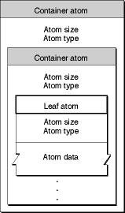
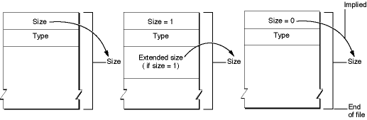
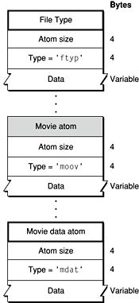

MOV内嵌GPS信息分析之一
官方资料 [QuickTime File Format Specification](https://developer.apple.com/library/mac/documentation/quicktime/qtff/QTFFChap1/qtff1
基本框架

ATOM大小计算

MOV文件基本ATOM

Basic ATOM
Basic atom types of a QuickTime file
| Atom type | Use |
|--------------|:------|
| 'ftyp' |File type compatibility—identifies the file type and differentiates it from similar file types, such as MPEG-4 files and JPEG-2000 files.|
| 'moov' |Movie resource metadata about the movie (number and type of tracks, location of sample data, and so on). Describes where the movie data can be found and how to interpret it.|
| 'mdat' |Movie sample data—media samples such as video frames and groups of audio samples. Usually this data can be interpreted only by using the movie resource.|
| 'free' |Unused space available in file. |
| 'skip' |Unused space available in file.|
| 'wide' |Reserved space—can be overwritten by an extended size field if the following atom exceeds 2^32 bytes, without displacing the contents of the following atom.|
| 'pnot' |Reference to movie preview data.|
ATOM ftyp
'ftyp' The File Type Compatibility Atom
The file type atom is optional, but strongly recommended. If present, it must be the first significant atom in the file, preceding the movie atom (and any free space atoms, preview atom, or movie data atoms).
edgar@debian:/data_disk/github/edgar1470.github.io/articles/qtff$ xxd -g4 -l 100 REC_0001_GPS_FAKE.MOV 0000000: 00000018 66747970 71742020 00000000 ....ftypqt .... 0000010: 71742020 00000000 0000747c 66726561 qt ......t|frea 0000020: 0000000c 74696d61 00000009 00001be4 ....tima........ 0000030: 74686d61 ffd8ffdb 00840006 04050605 thma............ 0000040: 04060605 06070706 080a100a 0a09090a ................ 0000050: 140e0f0c 10171418 18171416 161a1d25 ...............% 0000060: 1f1a1b23 ...#
the file type atom has an atom type value of 'ftyp' and contains the following fields:
- Size
A 32-bit unsigned integer that specifies the number of bytes in this atom.edgar@debian:/data_disk/github/edgar1470.github.io/articles/qtff$ xxd -g4 -l 100 REC_0001_GPS_FAKE.MOV 0000000: 00000018 66747970 71742020 00000000 ....ftypqt .... | size = 0x18 - Type
A 32-bit unsigned integer that identifies the atom type, typically represented as a four-character code; this field must be set to 'ftyp'.edgar@debian:/data_disk/github/edgar1470.github.io/articles/qtff$ xxd -g4 -l 100 REC_0001_GPS_FAKE.MOV 0000000: 00000018 66747970 71742020 00000000 ....ftypqt .... | must be 'ftyp' - Major_Brand
A 32-bit unsigned integer that should be set to 'qt ' (note the two trailing ASCII space characters) for QuickTime movie files. If a file is compatible with multiple brands, all such brands are listed in the Compatible_Brands fields, and the Major_Brand identifies the preferred brand or best use.edgar@debian:/data_disk/github/edgar1470.github.io/articles/qtff$ xxd -g4 -l 100 REC_0001_GPS_FAKE.MOV 0000000: 00000018 66747970 71742020 00000000 ....ftypqt .... | must be 'qt ' - Minor_Version
A 32-bit field that indicates the file format specification version. For QuickTime movie files, this takes the form of four binary-coded decimal values, indicating the century, year, and month of the QuickTime File Format Specification, followed by a binary coded decimal zero. For example, for the June 2004 minor version, this field is set to the BCD values 20 04 06 00.edgar@debian:/data_disk/github/edgar1470.github.io/articles/qtff$ xxd -g4 -l 100 REC_0001_GPS_FAKE.MOV 0000000: 00000018 66747970 71742020 00000000 ....ftypqt .... | minor version - Compatible_Brands[ ]
A series of unsigned 32-bit integers listing compatible file formats. The major brand must appear in the list of compatible brands. One or more “placeholder” entries with value zero are permitted; such entries should be ignored. If none of the Compatible_Brands fields is set to 'qt ', then the file is not a QuickTime movie file and is not compatible with this specification. Applications should return an error and close the file, or else invoke a file importer appropriate to one of the specified brands, preferably the major brand. QuickTime currently returns an error when attempting to open a file whose file type, file extension, or MIME type identifies it as a QuickTime movie, but whose file type atom does not include the 'qt ' brand.edgar@debian:/data_disk/github/edgar1470.github.io/articles/qtff$ xxd -g4 -l 100 REC_0001_GPS_FAKE.MOV 0000000: 00000018 66747970 71742020 00000000 ....ftypqt .... 0000010: 71742020 00000000 0000747c 66726561 qt ......t|frea | compatiable_brandsNote: A common source of this error is an MPEG-4 file incorrectly named with the .mov file extension or with the MIME type incorrectly set to “video/quicktime”. MPEG-4 files are automatically imported by QuickTime only when they are correctly identified as MPEG-4 files using the Mac OS file type, file extension, or MIME type. If you are creating a file type that is fully compatible with the QuickTime file format, one of the Compatible_Brand fields must be set to 'qt '; otherwise QuickTime will not recognize the file as a QuickTime movie.
Warning: Use of the QuickTime file format in this manner is subject to license from Apple, Inc.
NTK96650录制的MOV文件信息
以文件REC_0001_GPS_FAKE.MOV为例:
文件大小(字节) : 17894846 = 0x1110DBE
第一层atom
- ftyp 长度 = 0x00000018
- frea 长度 = 0x0000747c
- mdat 长度 = 0x01108b74
- moov 长度 = 0x00000db6
edgar@debian:/data_disk/github/edgar1470.github.io/articles/qtff$ xxd -g4 -l 100 REC_0001_GPS_FAKE.MOV 0000000: 00000018 66747970 71742020 00000000 ....ftypqt .... 0000010: 71742020 00000000 0000747c 66726561 qt ......t|frea 0000020: 0000000c 74696d61 00000009 00001be4 ....tima........ 0000030: 74686d61 ffd8ffdb 00840006 04050605 thma............ 0000040: 04060605 06070706 080a100a 0a09090a ................ 0000050: 140e0f0c 10171418 18171416 161a1d25 ...............% 0000060: 1f1a1b23 ...# edgar@debian:/data_disk/github/edgar1470.github.io/articles/qtff$ xxd -g4 -s 0x18 -l 100 REC_0001_GPS_FAKE.MOV 0000018: 0000747c 66726561 0000000c 74696d61 ..t|frea....tima 0000028: 00000009 00001be4 74686d61 ffd8ffdb ........thma.... 0000038: 00840006 04050605 04060605 06070706 ................ 0000048: 080a100a 0a09090a 140e0f0c 10171418 ................ 0000058: 18171416 161a1d25 1f1a1b23 1c161620 .......%...#... 0000068: 2c202326 27292a29 191f2d30 2d283025 , #&')*)..-0-(0% 0000078: 28292801 ()(. edgar@debian:/data_disk/github/edgar1470.github.io/articles/qtff$ xxd -g4 -s 0x7494 -l 100 REC_0001_GPS_FAKE.MOV 0007494: 01108b74 6d646174 00000000 00000000 ...tmdat........ 00074a4: 00000000 00000000 00000000 00000000 ................ 00074b4: 00000000 00000000 00000000 00000000 ................ 00074c4: 00000000 00000000 00000000 00000000 ................ 00074d4: 00000000 00000000 00000000 00000000 ................ 00074e4: 00000000 00000000 00000000 00000000 ................ 00074f4: 00000000 .... edgar@debian:/data_disk/github/edgar1470.github.io/articles/qtff$ xxd -g4 -s 0x1110008 -l 100 REC_0001_GPS_FAKE.MOV 1110008: 00000db6 6d6f6f76 0000006c 6d766864 ....moov...lmvhd 1110018: 00000000 cd07d7d4 cd07d7d4 00007530 ..............u0 1110028: 00041eb0 00010000 01000000 00000000 ................ 1110038: 00000000 00010000 00000000 00000000 ................ 1110048: 00000000 00010000 00000000 00000000 ................ 1110058: 00000000 40000000 00000000 00000000 ....@........... 1110068: 00000000 .... edgar@debian:/data_disk/github/edgar1470.github.io/articles/qtff$ xxd -g4 -s 0x1110D80 -l 100 REC_0001_GPS_FAKE.MOV 1110d80: d4800000 f2000001 0f800000 00003375 ..............3u 1110d90: 64746100 000013a9 666d7400 07000044 dta.....fmt....D 1110da0: 56522d43 44000000 0018a969 6e66000c VR-CD......inf.. 1110db0: 00004844 4456522d 31303830 5000 ..HDDVR-1080P.